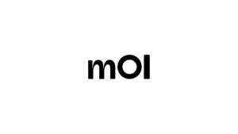

Trade Mark Journal No.2026/008 20 February 2026
UK00004330745 27 January 2026 (9,42,44)

- Class 9
- Downloadable diagnostic software; Downloadable medical software; Diagnostic devices; Diagnostic apparatus for detecting autoimmune and immunological disorders; In vitro diagnostic kits and reagents for identifying autoimmune disease biomarkers; Laboratory testing instruments for immunological and molecular assays; Downloadable software for analysis and interpretation of biomedical and immunological data; Computer software platforms for disease detection, monitoring and immune profiling; Biomarker detection systems and data processing tools for medical and scientific use Downloadable mobile applications; Diagnostic mobile applications; Health monitoring applications; Downloadable health monitoring applications; Downloadable mobile applications for medical diagnostic purposes; Downloadable mobile applications for immune profiling and biomarker analysis; Downloadable applications for viewing and managing diagnostic results; Downloadable software for collecting, analysing and visualising immunological and medical data; Downloadable apps for tracking immune system health and disease progression; Downloadable software for use in precision medicine and autoimmune disease analysis; Downloadable software for reporting, sharing, and reviewing medical and laboratory test results; Downloadable software for collection and analysis of patient-generated health data; Downloadable software for integration with wearable devices and remote health monitoring tools; Downloadable software incorporating artificial intelligence and machine learning for health monitoring and disease insights; Downloadable software for automated analysis and interpretation of diagnostic results; Downloadable software incorporating algorithms and data models for medical and diagnostic purposes.
- Class 42
- Software as a service (SaaS); Platform as a service (PaaS); Cloud-based software services; Immunology research; Diagnostic research; Software development; Scientific research and development in the field of immunology and autoimmune disease; Laboratory research services relating to biomarkers and diagnostic assay development; Design and development of computer software for biomedical data analysis and disease prediction; Bioinformatics and data analysis services for immunological and medical research; Scientific consulting services in the fields of precision medicine and diagnostics; Providing online platforms for disease detection, monitoring and immune profiling; Software as a Service (SaaS) for analysis of biomarkers and immune system data; Hosting of online software platforms for medical and scientific research; Providing online software for biomedical data collection, analysis and visualisation; Online platform services for clinical diagnostics and precision medicine research; Providing online platforms for viewing, managing and analysing diagnostic results; Hosting of online software platforms for medical, clinical, and scientific research; Providing online software for biomedical data collection, analysis and visualisation; Online platform services for clinical diagnostics and precision medicine research; Online platforms for secure sharing and monitoring of medical and diagnostic information; Artificial intelligence and machine learning services for medical data analysis; Development and deployment of algorithms and data models for medical and diagnostic applications; Cloud computing services for processing, storage and analysis of medical and diagnostic data; Providing temporary use of non-downloadable software for managing and analysing diagnostic results; Data security, encryption and access control services for medical and healthcare information; Hosting of secure digital platforms for healthcare data exchange and diagnostics.
- Class 44
- Medical diagnostics; Diagnostic testing; Clinical testing services; Medical consultation; Immunology services; Healthcare services; Health monitoring services; Disease screening services; Laboratory diagnostic services; Medical advisory services; Clinical services for autoimmune and immunological disorders; Providing healthcare services using biomarker analysis and immune profiling; Medical consultation in the field of early detection and management of autoimmune disease; Medical services using diagnostic software and online platforms for disease monitoring; Clinical laboratory services for research and testing of autoimmune and immune-related conditions; Telemedicine services for immune system monitoring; Remote medical monitoring using software and apps; Providing medical reports based on diagnostic test results; Providing medical information relating to immune health and autoimmune conditions; Providing digital medical information services via online platforms and applications; Medical information and advisory services based on diagnostic test results and immune profiling.
OtoImmune Ltd
Representative: Basck Limited